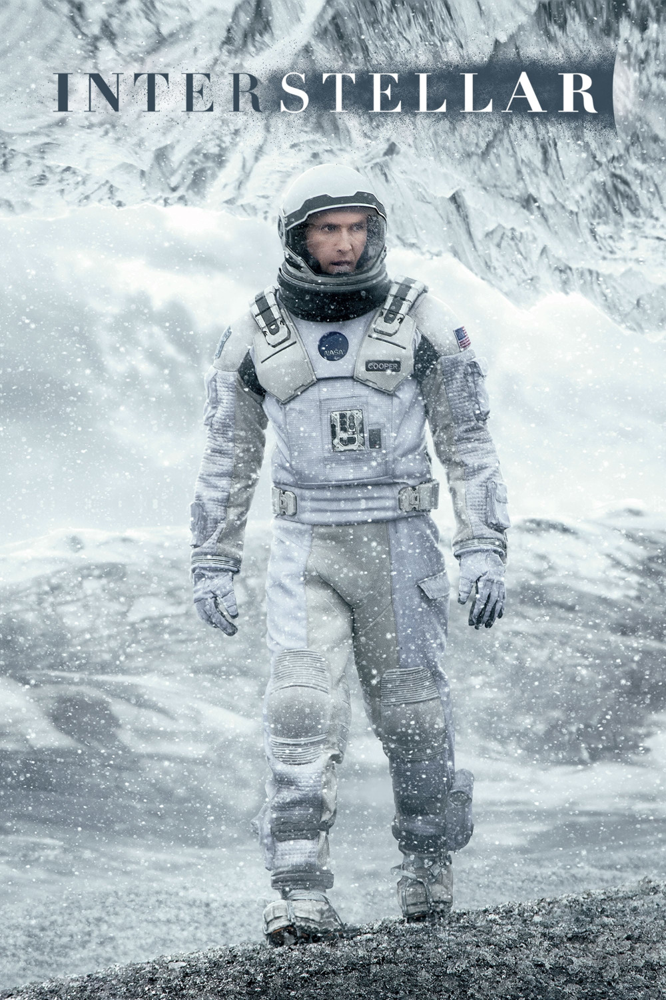

Мировая премьера: 7 ноября 2014
Слоган: Нам не суждено погибнуть вместе с Землёй.
Сюжет: Наше время на Земле подходит к концу, и команда первооткрывателей отправляется на самую важную миссию в истории человечества. Фермеру и бывшему пилоту Куперу приходится оставить свою семью на увядающей Земле и совершить путешествие в другую галактику, чтобы узнать, есть ли у человечества шанс на жизнь у дальних звёзд.
Режиссёр: Кристофер Нолан
В ролях: |
Мэттью МакКонахи | Купер |
| Энн Хэтауэй | Доктор Амелия Брэнд | |
| Джессика Честейн | Мёрфи "Мёрф" Купер | |
| Майкл Кейн | Профессор Джон Брэнд | |
| Мэтт Дэймон | Доктор Манн | |
| Дэвид Гяси | Доктор Ромилли | |
| Уэс Бентли | Доктор Дойл | |
| Маккензи Фой | Мёрф в 10 лет | |
| Джон Литгоу | Дональд | |
| Тофер Грейс | Джетти | |
| Тимоти Шаламе | Том в 15 лет | |
| Эллен Бёрстин | Старая Мёрф | |
| Кейси Аффлек | Том Купер | |
| Дэвид Ойелоуо | Директор школы | |
| Уильям Дивэйн | Уильямс |
Бюджет: $ 165 млн.
Кассовые сборы в США: $ 188 млн.
Кассовые сборы в мире: $ 759 млн.
Продолжительность: 2 ч. 44 мин.
Рейтинг: 8.7